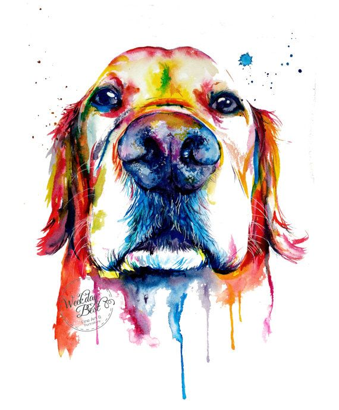
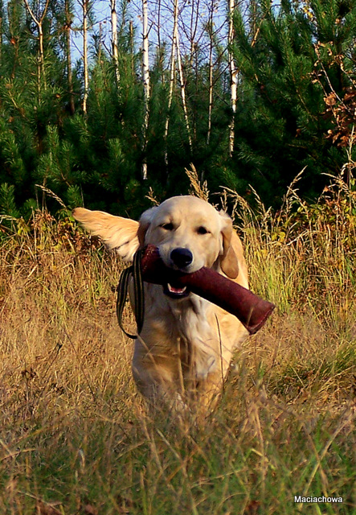
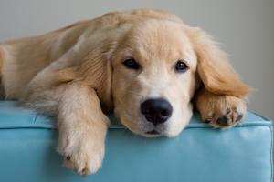

Skąd się wziął?
Początki golden retrievera są nieco kontrowersyjne. Początkowo wyhodowana do udziału w polowaniach, rasa ta stała się popularną rasą psów rodzinnych. Rasa pochodzi z Wielkiej Brytanii (Szkocja), została wyhodowana pod koniec XIX wieku. Prawdopodobnie goldeny zostały wyhodowane przez lorda Dudleya Mjoribanksa. W 1858 roku lord miał obejrzeć przedstawienie rosyjskiej grupy cyrkowej, którego główną atrakcją były pokazy kilku owczarków o żółtawej maści. Urzeczony ich umiejętnościami lord odkupił je i przywiózł do swojej posiadłości i to one miały być przodkami goldenów. Chociaż historię tę często się przytacza gdy mowa jest o początkach rasy, większość kynologów uważa ją za mało prawdopodobną. Owczarki charakteryzują się zupełnie innymi cechami niż psy myśliwskie. Związek z tą opowieścią ma jedynie to, że pierwsze goldeny pojawiły się na wystawie pod nazwą rosyjskich retrieverów. Inne źródła podają, że rasę tę wyodrębnił w XIX wieku lord Tweedmouth. Istnieje także teoria, według której skrzyżowano żółtego retriwera gładkowłosego o imieniu Nous z suką tweed water spaniela i otrzymano cztery, żółte szczenięta. Następnie w celu uszlachetnienia rasy skojarzono je z czarnymi wavy coated retrieverami (obecnie znanymi jako flat coated retrievery), seterami irlandzkimi i prawdopodobnie z bloodhoundami. Nowa rasa tak przypadła do gustu angielskim hodowcom, że postanowili ją rozpowszechnić. Do 1913 roku psy te były rejestrowane pod nazwą złocisty flat coated (gładkowłosy). Później zaczęto je nazywać żółtymi (yellow) lub złocistymi (golden) retrieverami. Obecna nazwa obowiązuje od 1920 roku. Określenie "golden" związane jest z kolorem sierści. Nazwa "retriever" pochodzi od angielskiego czasownika "to retrieve", który oznacza odzyskiwać/przynosić. W latach 60. XX wieku brytyjski związek kynologiczny uznał księgi hodowlane Lorda Marjoribanksa za dowód pochodzenia rasy.
Uspodobienie
Golden Retrievery to doskonałe psy myśliwskie i "rodzinne". Statystyczny przedstawiciel tej rasy jest pojętny, chętny do pracy, ma zrównoważoną psychikę i lubi dzieci. Jeśli jednak ktoś szuka psa do stróżowania, dzwonka alarmowego lub obrońcy domu powinien raczej rozejrzeć się za inną rasą. Golden może zalizać na śmierć złodzieja, a włamanie do domu po prostu przespać. Psy te uwielbiają pracować i przebywać z człowiekiem - właściwie prowadzone zrobią wszystko, aby spełnić jego oczekiwania. Niezbędne do ich prawidłowego rozwoju jest towarzystwo i spora ilość bodźców psychicznych, absolutnie nie nadają się do trzymania na łańcuchu z dala od ludzi. Bardzo łatwo się uczą i chętnie powtarzają te same ćwiczenia, są urodzonymi aporterami, co jest wykorzystywane m.in. w rehabilitacji niepełnosprawnych; psy przynoszą zakupy, podnoszą telefony itp. Goldeny uwielbiają wodę, jeszcze bardziej bagna i błota. Są to psy myśliwskie, w czasie polowania ich zadaniem jest przynoszenie ustrzelonej zwierzyny wprost pod nogi właściciela. Energiczne i aktywne lubią długie spacery, ale także wylegiwanie się na kanapie. Łatwo godzą się z sytuacjami życiowymi narzuconymi przez człowieka. Nie przyniosą wstydu w czasie wizyty u znajomych i mogą nam towarzyszyć na zakupach. Goldeny to psy bardzo wrażliwe, łatwo je złamać i zniechęcić do pracy nieumiejętnym traktowaniem, czyli np biciem. Jak większość ras, linieją dwa razy do roku, wtedy niestety trzeba oswoić się z myślą, o walce z jasnymi obłoczkami kłaków. Zwykle trwa to od tygodnia do dwóch, u psów trzymanych w mocno ogrzewanych mieszkaniach - nieco dłużej. Nie jest to zjawisko bardziej uciążliwe niż u innych ras o podobnej szacie. Goldeny bardzo trudno sprowokować, ze stoickim spokojem będą znosić zabawy dzieci, głaskanie napotkanych przechodniów, zaczepki innych psów itp. Oczywiście zawsze istnieje jakaś granica poza którą cierpliwość się kończy, dlatego nawet najłagodniejszego psa nie należy nigdy zostawiać samego z małymi dzieci, ani narażać na kontakty ze zbyt natrętnymi ludźmi.
Wygląd
Golden to pies o harmonijnej i silnej budowie. Ekspresyjna głowa, z wyraźnie zaznaczonym stopem i ciemne, szeroko rozstawione oczy składają się na niepowtarzalny efekt wizerunku radosnego i inteligentnego psa. Uszy średniej wielkości, osadzone na poziomie oczu. Prosty grzbiet, głęboka klatka piersiowa z widocznym przedpiersiem. Proste kończyny o mocnej kości. Ogon osadzony i noszony z linią grzbietu, sięgający stawu skokowego, i z obfitym piórem. Chód dynamiczny. Sierść powinna być gęsta z podszerstkiem, prosta lub falista. Umaszczenie złote lub kremowe. Należy w tym miejscu wspomnieć ,że istnieją istotne różnice między dwoma typami goldenów - amerykańskim i angielskim. Golden retriever występuje w dwóch liniach hodowlanych, które różnią się od siebie pod względem wyglądu. Linia angielska (Europejska): psy z tej linii mają jasne kremowe umaszczenie lub jasno złote. Sierść ich jest prosta bądź falowana. Linia amerykańska: psy pochodzące z USA mają barwę od złotej aż po czekoladową, rzadko brązową, lecz nigdy nie mahoniową. Sierść może być prosta lub falowana. Budowa ich ciała jest znacznie delikatniejsza i smuklejsza od ich europejskich kuzynów.
Pielęgnacja
Tak aktywny pies potrzebuje sporej dziennej dawki ruchu (co najmniej 2-godzinnej). Wymaga regularnego wyczesywania - przynajmniej raz w tygodniu, a w okresie linienia codziennie. Wymaga także specjalnej uwagi w pielęgnacji uszu ze względu na ich podatność na infekcje.Najczęstsze choroby: dysplazja bioder, dysplazja łokci,zapalenie więzadeł,PRA - postępujący zanik siatkówki, katarakta, dysplazja siatkówki, zapalenie powieki, dystrofia rogówki, zapalenie uszu, parwowiroza.
| --------- | wszystko | wszystko | wszystko |
|---|---|---|---|
| food | food | food | Bacon |
| Poniżej | cała | prawda | o Goldenach ;-) |